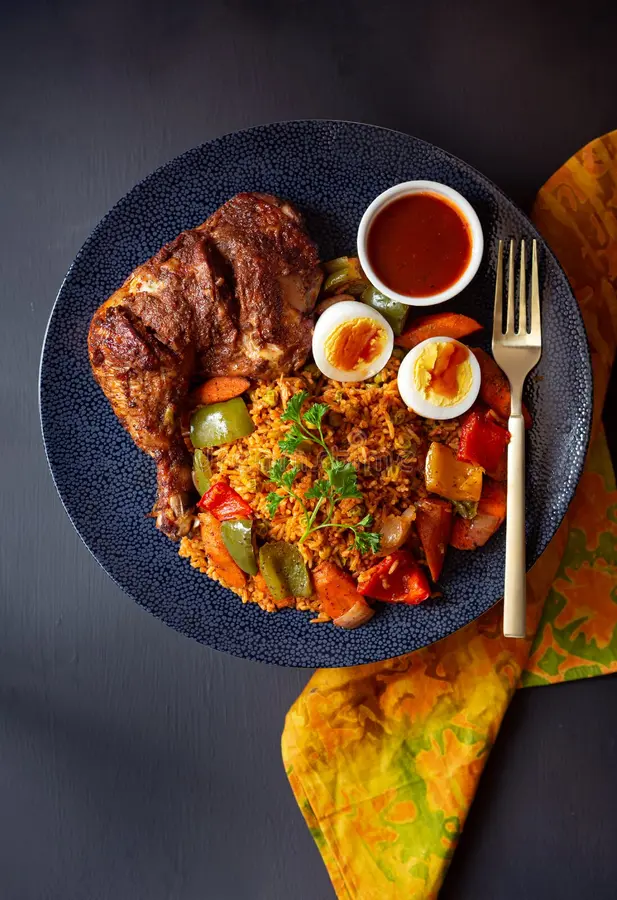

Jollof Rice
Jollof rice is the dish that sparks friendly debate across West Africa. Ghana's version is known for its deep red-orange color, softer consistency, and bold use of Scotch bonnet peppers. The rice is cooked in a concentrated tomato-based stew with onions, spices like thyme, curry powder, ginger, and bay leaves,absorbing every ounce of flavor as it simmers. The best jollof develops a slightly caramelized crust at the bottom of the pot, called "socarrat." It's served with fried plantains, grilled chicken, or stews, and eaten at celebrations, Sunday gatherings, and any meal that matters.
Learn More →